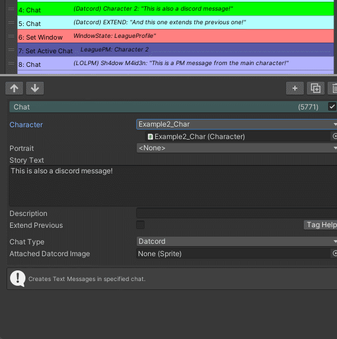
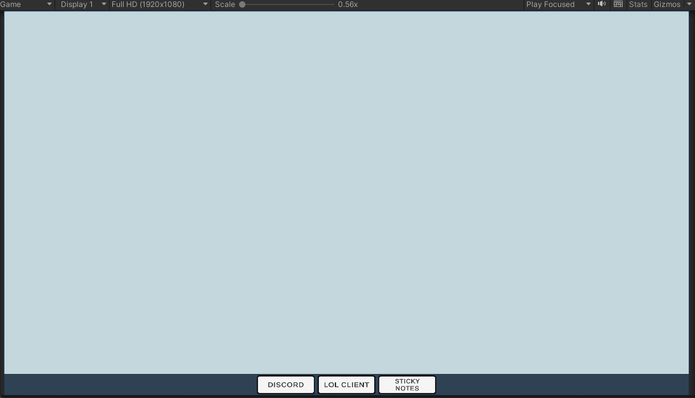
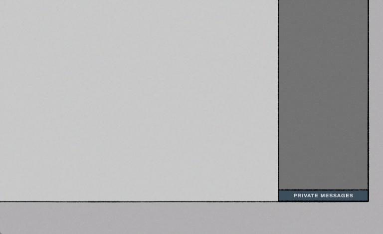

Catfished - A Visual Novel Game
My Role(s)
Solo Developer
Tools
Unity, Unreal Engine 5, Figma, Fungus, Ink
Time
From 2019 - Ongoing
Team size
Solo
I wrote a short novel that I'm quite fond of but felt the story would be more suited for a different medium.
The story? A romance featuring two young adult guys who meet through video games and start developing a close relationship.
The catch? Both are pretending to be a girl and desperate to keep that fact a secret.
Catfished is a solo passion-project I started after finishing the first story draft in 2019.
The core concept is to make a visual novel style game that takes place on a computer desktop.
Being a long lived project, it has seen many iterations and versions.
Remaking it in any new software I’m trying has become a bit of a habit of mine.
It's a fairly effective way to learn though, doing something familiar in an unfamiliar tool.
It’s helped me build a lot of the UI habits I have and motivated me to keep learning and improving myself both as a person and creator.
I genuinely love creating.
A long journey with many bumps
TLDR: I’m an idiot. Ask people for help. Kill your darlings.
I started out with the plan of making a visual novel retelling of the novel I wrote with little deviation from the source.
My ambition for the project, as it often does for creators, grew overtime.
I imagined multiple different branches and endings, more involved interactions.
One of my biggest pitfalls was getting stuck in my own head and being afraid to get others input.
Once I actually reached out for advice I gained so much clarity from just explaining the problems I was having.
I was trying to find solutions to features I had tacked on but I didn’t really need.
I love the game Simulacra’s premise; the idea of going through someone’s device and trying to find clues about what happened to them is such an intriguing concept.
But Catfished isn’t a mystery horror game, it’s a cute linear romance story.
I don’t need to allow the player complete freedom and make all the apps functional with content.
There’s no point to it here. I’m trying to tell a linear story and that freedom would only introduce more issues I’d need to solve.
I want to make a game of my own inspired by Simulacra one day, but Catfished is not the place for it.
Realizing that and accepting that has helped remove a lot of unnecessary features I deemed must haves.
How we're going to structuring this
The project can be broken down into three distinct iterations, the earlier two developed in Unity whilst the current one in Unreal Engine 5. Alongside that there’s the UI design journey that has taken place overtime. To structure this page I’ll break it into three different sections: Fungus + Unity iteration, Ink + Unity iteration and Unreal Engine iteratiom. Fungus and Ink will make sense later.
Unity + Fungus Iteration
Fungus is a node based visual novel plugin for Unity with great documentation and practically all the features needed to create a standard visual novel.
I’ve created a more standard visual novel with the plugin previously so I was familiar working with the plugin.
A key feature I hadn't attempted before was extending Fungus with my own commands.
Catfished takes place on a desktop and I need a couple of different windows showing unique data. I built a system to handle these windows and update their data.
I wrote the games content using Fungus, but in order for Fungus to interact with my system I had to create custom commands of my own that supplies my system with data,
for example on what window to display.
Getting content for spawning in chat messages was more of a struggle to integrate from Fungus into my system. One of the most used Fungus commands is the Say command,
which displays dialogue in a dialogue box with a typewriting effect. By default this command waits for user input before continuing to the next command, which is something I wanted.
I didn’t know how to do this on my own at the time so I added my own code into Fungus’ Say command.
It was scuffed. The Say command can take in a reference to a custom dialogue box, so I created multiple different ones depending on what message type I needed to display.
Then in code I used that dialogue box reference’s and it's name to determine what type of message should be sent, if any.
All the assets were drawn by me on my iPad. First version I just traced over screenshots of Discord and League of Legends. Unsure how legal this actually is.

This version of the game has a playable build!
I wasn't satisfyied with the dialogue box displaying every message. Made the windows in the background somewhat redundant. I did make another scuffed cheat to circumvent this by just hiding the dialogue box UI, which works but is as I said.. scuffed. I decided to take on the task of making my own Say command so normal dialogue could be separated from chat dialogue. I created the Chat command and got to code a custom editor in order to decide what variables to show depending on the context of what chat type it was.

I also decided to remake the art assets so there was some design thought put into it. I removed a lot of unnecessary details as I wanted it to be more readable and simplified.

This iteration works, the only major feature it’s missing is a solid save system.
I could probably have made the entire game with it but, considering that I’ve spoiled there's two more after this, that didn’t end up happening.
I personally wasn’t a fan of creating and editing content in Fungus’ node based system.
It’s great for smaller projects but this bad boy was going to need a lot of text and I was already burnt out translating the first chapter.
Spell checking was a nightmare because there was none and I can’t spell to save my life. I wanted to just write the story in a text editor,
slap that into the game and let it run but that wasn’t possible with Fungus.
You can export the existing nodes to a spreadsheet and edit that before importing it again,
but a major limitation is you can’t add or remove nodes in the spreadsheet.
Another big one is that the export didn’t handle my custom commands too nicely, which was a slight issue when about 90% of the content was using my custom commands.
Now I could have deep dove and tried to extend Fungus further but I didn’t really feel up to the task nor found it worth my time.
And that’s where we leave this one. This version also has a build, approximately the game's first chapter.
Window transition showcase

Unity + Ink Iteration
Ink
After Fungus I restarted on a new project, writing my own system for parsing text from a json file.
This was short lived as I found Ink, a text editor with a scripting language for writing interactive stories, with a plugin for Unity.
The plan was similar to the Fungus iteration, just replacing Fungus with Ink.
For this new system, I write the story in Ink who manages the story flow, supplying the game with the next line when prompted.
I do still need to handle that line properly. I made syntax for how to format the dialogue so I could easier parse through it in code.
A change with this version was I wanted the game to be more interactive, less visual novel.
To do this I gave the player more freedom, letting them control the windows instead of the system doing it.
I prototyped up a taskbar that the player could interact with to open, bring to front and close windows with.
Clicking on a window will bring it to the front. The player can also move the windows around.

This new design direction meant I needed to implement a way to notify the player when a change happened and their input was needed in a closed window. Basically, I needed notifications.

By this stage I flip-flopped a lot regarding the games visuals. I have a fairly sketchy artstyle for characters so I went with that for the UI aswell. I had however discovered Figma and started to really enjoy playing around with it, creating a bunch of layout mockups. I do like the sketchy look to the Fungus iteration of the game but wanted to try something new so I went with a more digital vector approach for this iteration.
Figma concepts
As my opinions on the games interactiveness had changed, so did the UI need to in order to reflect it. The windows would no longer be static background elements, the player could interact with them so I needed to streamline my design. I started soaking up a lot more UI and UX concepts. Keeping consistent margins, padding and sizes for elements, visual hierarchy emphasizing importance. The list goes on. Studying how the original apps I was trying to recreate in Figma taught me a lot. Having a clear design direction. This was made a bit difficult with the fact I was trying to redesign different apps with quite differing design identities. I wanted to keep the original inspirations unique design in my version so it'd still be recognizable but I also want a consistent design for my windows in my game.


This version of the game got the main windows working and a basic dialogue box. No portraits though.
Unreal Engine 5 Iteration
After working in Unreal Engine and getting familiar with coding in blueprints and UMG, I started anew.
And will you look at that, Ink just happens to have an Unreal Engine plugin! Well, kind of, it’s not as official as the Unity version but still. It works!
You can make round corners!! And materials specifically for UI.

Visual novel scene transitions.